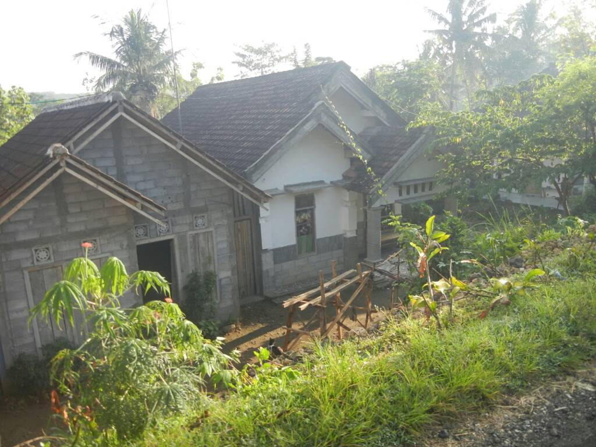
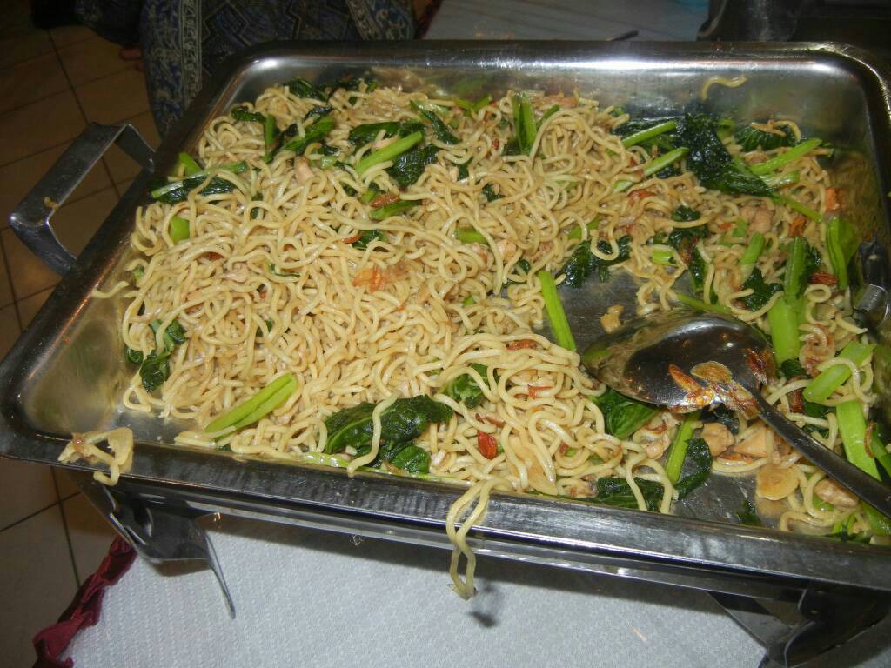

OUR SECOND DAY! VILLAGE ACTIVITIES AWAITS!
The 8th graders went to the rice fields for adventure and fun in rivers, mud, and others. They also learn about farming systems in the village. Their clothes are dirty by the mud and wet because of the river but overall everyone is having fun and the weather is sunny, so that's good. Some students go home to rest, others buy drinks to freshen up and some are sitting, talking to friends.
Afterwards the students get to meet friends that evening and hang out together drinking cold drinks. They also get to eat dinner and interact more with the respective villagers in each house.

